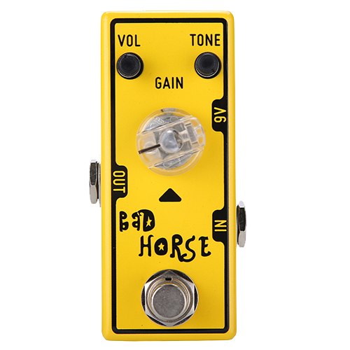

Tone City Bad Horse

Overview
The Tone City Bad Horse is a compact, mini-sized overdrive pedal renowned for its sweet, transparent, and "creamy" tones. Inspired by the legendary Klon Centaur circuit, it utilizes a clean-drive mix architecture and germanium diodes.
Because of this design, your core guitar tone remains clear and articulate even as you increase the gain, making it an excellent choice both as a clean boost and as a medium-gain drive to push an amplifier that is already on the edge of breakup.
Contents
Controls
- Volume: Controls the overall output level of the pedal. Can be used to drive the front end of your amplifier.
- Tone: Adjusts the equalization and overall brightness of your signal.
- Gain: Controls the amount of overdrive and saturation. At lower settings, it acts as a transparent clean boost.
Specifications
- Type: Overdrive (Klon-style)
- Input Impedance: 1 MΩ
- Output Impedance: 10 kΩ
- Bypass: True Bypass
Power Requirements
The Tone City Bad Horse requires a standard 9V DC power supply with a center-negative polarity.
Current Draw: Approx. 10mA
Important Warning: Do not attempt to use an 18V power supply or any voltage higher than 9V, as this will damage the internal circuitry.